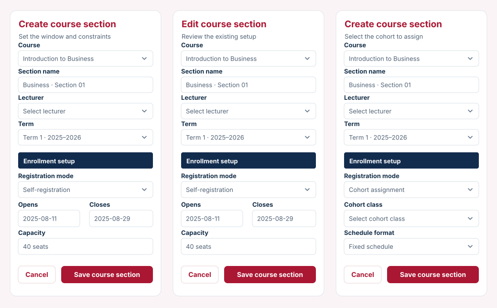
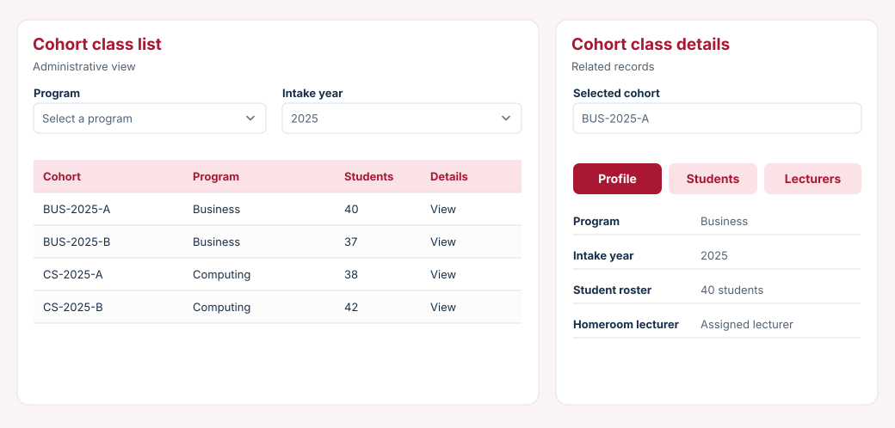
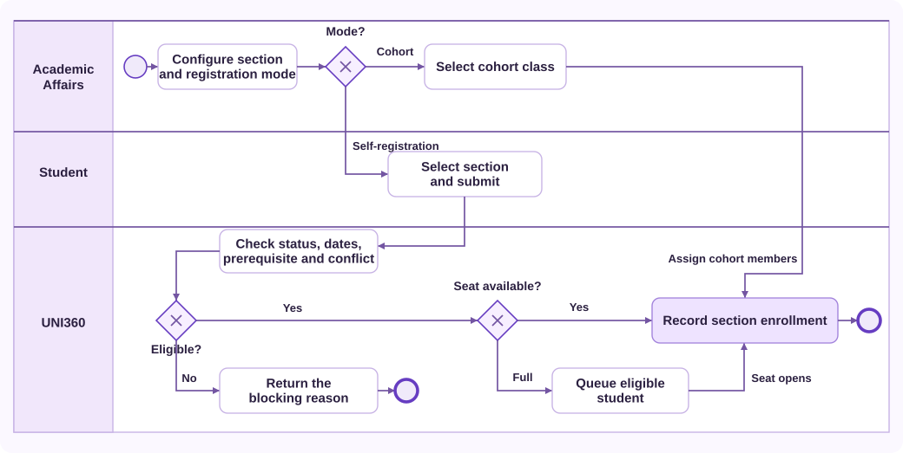
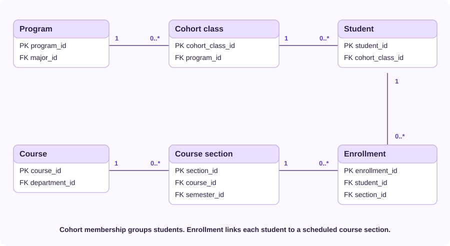

Who uses this product
UNI360 separates institutional organization, academic operations and delivery. The role map connects authorization scope with menu visibility.
| Role | What they do | What the interface must support |
|---|---|---|
| System administrator | Administers platform configuration and member institutions. | Platform-level management. |
| Academic affairs / school admin | Sets up training structures, terms, cohorts, scheduled sections and assignments. | Administration forms and controls with school scope. |
| Academic leadership | Oversees the institution, faculty, department or program. | Visibility scoped to the academic structure assigned to the role. |
| Lecturer | Manages activities and materials inside an assigned section. | Course-content editing. Academic affairs owns the setup of administrator-created sections. |
| Student | Accesses assigned sections or self-registers where enabled. | Separate My Classes and eligible registration views. |
How the academic structure works
A faculty contains majors and departments. Majors contain programs, departments own courses, and a course can serve multiple programs. Cohorts group students, while course sections carry the lecturer assignment, schedule and term registration.
Create the section before enrollment
Academic affairs configures the semester, lecturer, capacity and enrollment mode. There are fixed-schedule and self-paced section formats. For admin-created sections, the admin controls section configuration and the lecturer controls learning content inside it.
Assigned enrollment and self-registration
Assigned enrollment brings students in from a cohort. Self-registration lets the student request an open section. The specification checks eligibility, prerequisites, scheduling and registration deadline. Its waitlist design handles capacity and promotes a waiting student when a place becomes available.
The data model behind the UI
Cohort membership and section enrollment are separate relationships. Enrollment is unique per student and course section. Tests therefore attach to a particular request and can verify whether the result is blocked, enrolled or waitlisted.
Design evidence
The images below include English translations and annotated adaptations of the Figma layouts. The sample screens use fictional records. The original design files contain the complete collections and prototype details.
Academic operations


The form layout distinguishes both create and edit variants and shows which registration controls depend on the selected mode.


The class list and detail wireframes keep cohort membership, program, intake and lecturer information easy to locate.
| Figma pattern | What the source shows | Handoff decision |
|---|---|---|
| Role/menu board | The FigJam source maps administration, academic leadership, lecturers and students to their menus. | Review navigation scope before specifying individual screens. |
| Course-section form variants | Academic operations contains separate forms for sections with assigned enrollment and learner self-registration. | Make enrollment ownership explicit and vary the relevant inputs by mode. |
| Cohort versus course section | The board contains separate cohort lists, student and lecturer details, and course-section operations. | Keep cohort membership separate from the enrollment record and the section’s schedule. |
BPMN · cohort assignment and self-registration

The registration mode determines the entry path. Self-registration checks active status, timing, prerequisites and schedule. Where the waitlist applies, an eligible student can queue for a seat.
ERD · cohort membership and section enrollment

A cohort class groups students over time. Enrollment records connect students to scheduled course sections.
UAT · registration decisions
| Scenario | Rule verified | Expected |
|---|---|---|
| Prerequisite unfinished | Required prior course | Block request and identify the missing prerequisite. |
| Section full | Capacity and waitlist | Queue the eligible student where the waitlist applies. |
| Seat becomes available | Waitlist promotion | Promote the next eligible student per waitlist order. |
| Schedule overlaps | Timetable validation | Block request and explain the conflict. |
| Checks pass | Valid section and eligibility | Create enrollment and show a confirmation. |